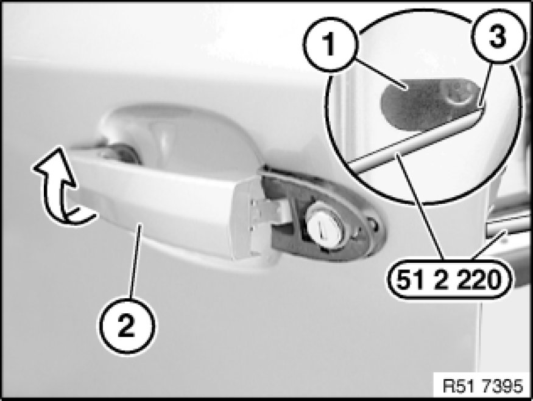
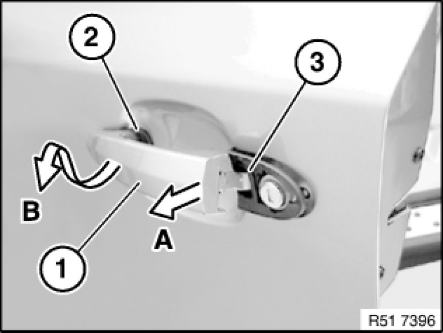
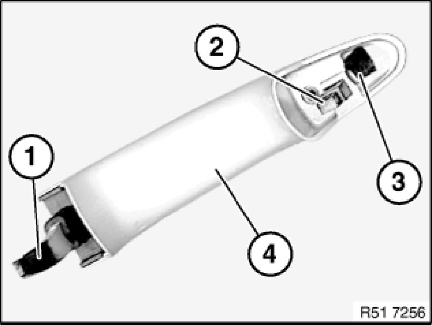
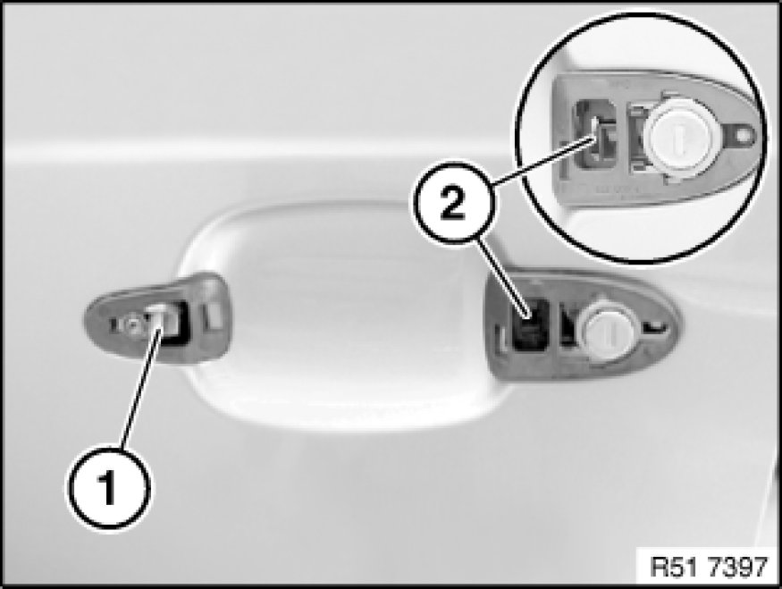
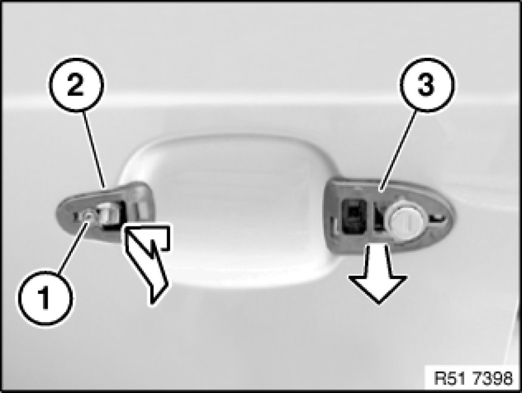

Removing and Installing/Replacing Outside Handle From Left or Right Front Door
51 21 170 - Removing and installing or replacing outside handle from left or right front door

Special tools required:
- 51 2 220 51 2 220 Torx

Necessary preliminary tasks:
- Remove cover on outside handle Removing and Installing/Replacing Cover on Outside Handle

Removal:
Note:
Installation is described separately from removal.
Remove plate (1).
Installation:
If necessary, replace faulty trim (1).

Note:
Protect bore (1) against scratching (risk of corrosion).
Important!
If screw (3) is not correctly secured, the lock mechanism can jump back and the sound insulation must be removed.
Pull outside handle (2) outwards/upwards and hold.
Using special tool 51 2 220 51 2 220 Torx, turn screw (3) in counterclockwise direction and thereby secure outside handle (2).
Tightening torque 51 21 5AZ 51 21 Front Door Locks.

Note:
For removal, outside handle (1) must remain secured with a screwdriver.
-A)
- Pull off outside handle (1) from rear lock actuator (2).
-B)
- Pull off outside handle (1) downwards/outwards (in direction of arrow) from front lock actuator (3).

Installation:
Following parts on outside handle (4) must not be damaged or missing:
1 - Rear mounting
2 - Front mounting
3 - Felt strip (if available for refitting/replacement no longer required)

Insert outside handle with bore hole correctly in mounting (1).
Snap rear mounting on outside handle correctly into lock actuator (2).

Release screw (1).
Remove seals (2 and 3) in direction of arrow.
If necessary, replace faulty seals (2 and 3).
Note:
Protect bore (1) against scratching (risk of corrosion).
Important!
If screw (3) is not correctly secured, the lock mechanism can jump back and the sound insulation must be removed.
Grip outside handle (2) and, using special tool 51 2 220 51 2 220 Torx, screw down screw (3) in clockwise direction.
Tightening torque 51 21 5AZ 51 21 Front Door Locks.
Carry out function check only with door open.